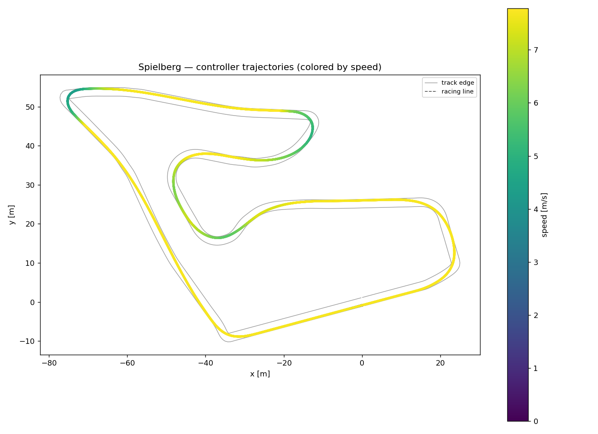
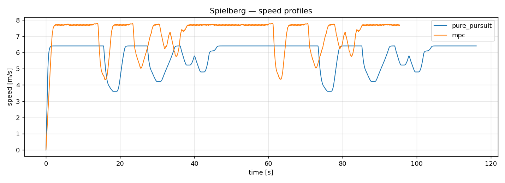

A nonlinear MPC controller that tracks the optimal racing line in the F1TENTH simulator. 18% faster than a tuned pure-pursuit baseline, and within 5% of the theoretical minimum-time lap.
Benchmarked on Spielberg (338 m lap). The MPC never leaves the racing line by more than 20 cm, solving its optimisation in ~8 ms.
| Controller | Lap time | Top speed | Max tracking error |
|---|---|---|---|
| Ideal racing line (perfect tracking) | 45.05 s | 8.0 m/s | — |
| Pure Pursuit (geometric baseline) | 57.85 s | 6.4 m/s | 0.19 m |
| Nonlinear MPC | 47.22 s | 7.8 m/s | 0.20 m |
Inspired by Politecnico di Milano's PoliMOVE program (Indy Autonomous Challenge). At every tick the controller solves an optimal-control problem over a ~2.5 s horizon: what steering + acceleration keeps the car on the racing line at its target speed?
Kinematic bicycle model (RK4), matched to the F1TENTH car's wheelbase and actuator limits, so the plan is feasible for the simulator's full dynamic model.
Nonlinear MPC solved with CasADi + IPOPT, warm-started each step, with a friction-circle limit on lateral acceleration to keep the car inside the tyre grip envelope.
Tracks a pre-computed minimum-time racing line (position + curvature + target-speed profile) — the same kind of line a real racing team optimises offline.
Python, CasADi/IPOPT, NumPy, the open-source F1TENTH Gym. Reproducible benchmark + plots; runs on any laptop.
The interesting part wasn't the happy path — it was the failures. Every crash traced back to a specific, non-obvious bug:

